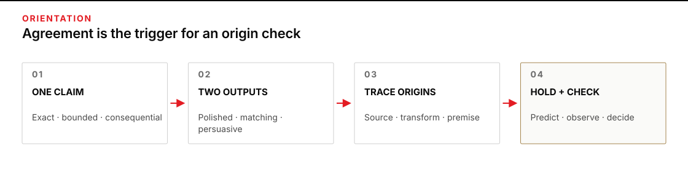
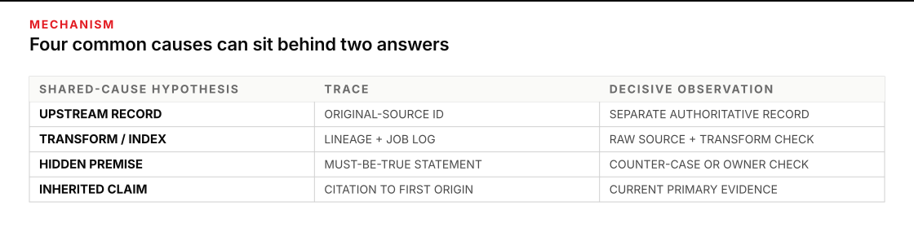
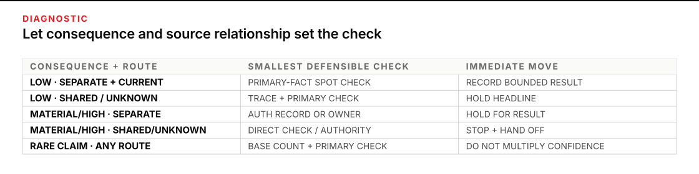

When agreement feels like permission to stop checking
Two polished outputs make the same recommendation, cite apparently different artifacts, and use nearly identical dates. The comparison packet is clean. Nothing is visibly in dispute. This is the moment when an operator is most likely to convert agreement into truth without noticing the extra claim.
Give this audit 45–60 minutes. You will leave with a silent-agreement audit: one exact agreement statement, plausible shared-cause hypotheses, relevant base context, the smallest observation that can separate the leading explanations, the result, residual uncertainty, and a named next owner.
Begin after the frozen brief, two outputs, and comparison record already exist. Keep P3 · Going deeper nearby for that workflow. Do not rerun its comparator or adjudication fork here. The new question is narrower: if this shared conclusion is wrong, what single upstream condition could have made both outputs wrong together?

Figure transcript
Stage one is one bounded claim. Stage two is two polished outputs that agree. Stage three traces the apparent support backward to its origins. If the paths collapse to one source, transform, or premise, the evidence relationship is shared and the agreement is an echo rather than independent corroboration. The echo may still be correct. Stage four is hold and check: define what the current authoritative record would show if the claim is supported or contradicted, inspect it once, and record the result. The decision changes because of that observation, not because two outputs used confident language.
Audit the route to agreement, not the volume of agreement
Common-cause error means that several failures have one origin. Common-mode error is the narrower case in which several systems fail in the same way for the same reason. NASA reliability work uses these concepts to explain why nominal redundancy can be defeated by a shared cause. Two outputs are not aircraft systems, but the operator lesson transfers cleanly: a second answer adds little protection when the same upstream defect can reach both paths.
That defect need not be a shared model. Two different engines can still inherit the same bad source, missing record, extraction pipeline, task premise, date convention, or widely repeated public claim. Different prose is not evidence of different causal routes. Different filenames are not necessarily different sources. Count origins, not documents.
Keep evidence relationship separate from claim state
Record three questions on separate lines:
- What do the outputs say? “Agreement observed” means two outputs state the same bounded claim.
- How are their evidence routes related? Mark the relationship unknown, shared, or meaningfully separate. Shared support is an echo. Separate, relevant, current support can provide corroboration.
- What is the claim state after the decisive check? Mark the claim supported, contradicted, or unresolved under the checked conditions.
These are not rungs on one ladder. An echoed claim can be true and later confirmed by a direct check. Two separate routes can still agree on a false claim. Provenance classifies the relationship between the outputs; the decisive observation tests the claim.
The UK Government’s intelligence-practice standard makes the distinction operationally sharp: information can be treated as corroborated only when the corroboration is independent and does not come from the same original source. Dietterich’s classic ensemble analysis reaches a related result in machine learning: combining classifiers helps when they are accurate and make at least somewhat uncorrelated errors; identical error patterns fail together. Neither source licenses a confidence multiplier for two language-model answers. Both warn you to inspect error dependence before treating plurality as protection.
Use conditional independence as a question, not a badge
In probability, conditional independence is a formal property that requires a model and evidence. A desk audit cannot prove it by intuition. Use the idea as a disciplined question: after making the shared sources, transforms, and premises explicit, what observation from output B remains that output A could not have inherited? If the answer is “none,” the agreement may still be correct, but it has not earned the weight of two independent confirmations.
Test four common-cause families after agreement appears:
- Shared upstream record: both paths ultimately quote the same email, database row, report, or human assertion.
- Shared transform: different artifacts were produced by one parser, index, summary job, unit conversion, or stale snapshot.
- Hidden common premise: the prompt, schema, rubric, or operator wording makes an unverified assumption feel like a fact.
- Inherited public claim: both outputs repeat a familiar assertion whose popularity is mistaken for current evidence.
CIA guidance on checking key assumptions recommends surfacing both stated and unstated premises and asking what information would overturn them. That move matters here because a common premise can make outputs agree even when their cited sentences differ.
Let base context tune the check, never decide the case
A base rate is how often the relevant condition occurred in an appropriate set of comparable cases before you saw these two outputs. If 18 of the last 20 calibration renewals finished on time, a current renewal is plausible before any model answers arrive. If only 1 of 40 emergency change-window requests was approved, rollover is unusual. The CIA’s treatment of the base-rate fallacy warns that people often neglect such prior frequencies when judging a particular case.
The opposite error is just as dangerous: using the base rate as a verdict. “Usually renewed” does not mean “renewed now,” and “rarely approved” does not mean “impossible today.” Record the comparison set, count, time window, and owner. Then use it to calibrate surprise and checking effort. A rare, high-consequence claim deserves a direct check; a common, low-consequence claim may justify a smaller spot check. The present case still turns on present evidence.
Choose the smallest decisive observation
A decisive observation is one expected to look different if the agreed claim is true than if it is false. “Ask a third engine” is weak when the third engine may inherit the same source. “Open the current signed certificate register” is stronger because a current calibration claim predicts a valid certificate, while a not-current claim predicts that no valid certificate covers the release date. The provenance trace separately tells you whether the two outputs echoed one route.
Define the acceptance conditions before checking:
- If the agreed claim is true under the current conditions, what should the authoritative record or direct observation show?
- If the agreed claim is false, what different result should appear?
Scale the check to consequence and source relationship. For a reversible draft label backed by traceably separate current records, one primary-fact spot check may be enough. For a release, safety, personnel, access, financial, or legal decision with shared or unknown provenance, stop and require a direct authoritative record or accountable human owner. ODNI analytic standards similarly tie confidence to the quantity and quality of source material and call for indicators that would change uncertainty. The useful operator move is not “be more skeptical.” It is “name the observation that can move the decision.”

Figure transcript
For a shared upstream record, inspect the original-source identifier to classify the output relationship, then check a separate authoritative record to test the claim. For a shared transform, inspect lineage through the parser, index, summary, or conversion, then check the raw source and transform behavior. For a hidden common premise, write what must be true in the prompt, schema, or rubric, then inspect a counter-case or ask the accountable owner. For an inherited public claim, trace citations to their first reachable origin, then inspect current primary evidence. These are common-cause hypotheses, not claim verdicts; an echo can be correct, and one output pair may involve more than one row.
Worked case: two green lights from one draft renewal
A manufacturing team is preparing a low-volume release. One acceptance condition is that bench CAL-44 have a current calibration through 31 October. The comparison packet already contains two separately generated answers to the same frozen question.
| Output | Conclusion | Visible support | Presentation |
|---|---|---|---|
| A | Release condition met; CAL-44 is current through 31 October. | asset_snapshot.csv, row CAL-44 | Concise release note with a green status |
| B | Calibration does not block release; next expiry is 31 October. | readiness_digest.md, “Metrology” section | Detailed rationale and a matching date |
The outputs look stronger together than either looks alone. The filenames differ. The wording differs. The date matches. The agreed claim is exact:
CAL-44 has a current approved calibration through 31 October, so calibration status does not block this release.
Trace enough provenance to form hypotheses
The operator does not launch a broad document audit. She traces only the support for that claim. The snapshot’s metadata says it was built by the nightly asset-summary job. The digest’s footer says it was generated from the same nightly snapshot. The job log shows its calibration date came from an optical-character-recognition extraction of a renewal packet. Both filenames collapse to one transform and one upstream packet.
The packet contains a draft renewal email: “Planned new expiry: 31 October.” It does not contain a signed certificate. A scan-index warning shows that one page type—signed calibration certificates—was excluded after a template change. The strongest shared-cause hypotheses are now concrete:
- the draft planned date was promoted to an approved date;
- the shared extraction job omitted the document that distinguishes planned from current;
- the frozen question’s phrase “next expiry” encouraged both outputs to treat the populated date as authoritative.
Base context adds restraint, not resolution. Eighteen of the previous 20 comparable renewals completed before expiry. That makes timely renewal unsurprising. It does not show whether CAL-44 is one of the 18 or one of the two exceptions.
Check the current authoritative record
The release consequence is material, and the two evidence paths are now known to be shared. The smallest decisive check is the current controlled certificate register—not another summary and not another engine.
- If CAL-44 is current: the register should contain a signed, approved certificate whose effective period covers the release date and expires 31 October.
- If CAL-44 is not current: the register should contain no valid certificate covering the release date; it may show the prior certificate expired and a replacement still pending.
The register shows that the prior certificate expired 30 September. The renewal is pending metrology approval. The operator marks the release HOLD, names the metrology owner, and records that the index pipeline also needs repair before it can support later checks. Residual uncertainty remains: the renewal may be approved before the planned release, but it is not approved now.
The mistake to avoid: counting polish and filenames as confirmations
Before the provenance trace, a reviewer writes: “Two engines, two source files, one matching date—four confirmations.” That sentence is the false-confidence failure. Its observable symptoms are a count with no causal units, confidence language that rose without new evidence, and no observation that could overturn the conclusion.
Recovery has three moves. First, restore the claim to agreement observed. Second, collapse every apparent support item to its original source and transform. Third, run the prewritten decisive check. Do not average the outputs, ask them to debate, or add a third summary. The controlled register—not the fluent consensus—changes the decision.
Recovered record: Two outputs agreed that CAL-44 was current through 31 October, but both depended on one nightly transform of a draft renewal packet. Their evidence relationship is shared. The current controlled register showed expiry on 30 September and a pending renewal, so the present-tense claim is contradicted. Release remains on hold with the metrology owner. Future approval timing is unresolved.
NIST warns that generative systems can produce confidently stated false content, including false citations and reasoning. The practical hazard in this case is not merely that one answer sounds certain. It is that two polished answers can inherit the same defect and make certainty feel earned.

Figure transcript
Low consequence with traceably separate and current sources calls for a primary-fact spot check and a bounded result. Low consequence with shared or unknown sources calls for tracing one origin, checking the primary fact, and holding the headline. Material or high consequence with traceably separate sources still calls for a current authoritative record or accountable owner and a hold until the result arrives. Material or high consequence with shared or unknown sources calls for direct observation or accountable authority, with work stopped and handed off. A rare or surprising claim under any source relationship calls for recording an appropriate base count and checking current primary evidence; rarity changes checking effort but is never itself a verdict.
Keep a reusable silent-agreement audit
Use this record on an agreement that could change a real decision. It keeps source relationship and claim truth separate, then binds the conclusion to one authoritative observation.
# Silent-agreement audit
Decision this agreement could change:
Consequence if wrong (low / material / high):
Exact agreement statement:
Output A evidence path:
Output B evidence path:
What is observed agreement—not yet corroboration:
Plausible shared causes:
- Shared upstream record:
- Shared transform, index, or summary:
- Hidden common premise or schema assumption:
- Inherited public or organizational claim:
Prior / base context before seeing the outputs:
Comparable set, count, time window, and owner:
What that context changes:
What it cannot decide:
Source quality and currency notes:
Smallest decisive observation:
Result that would support the agreed claim:
Result that would contradict the agreed claim:
Observed result:
A/B evidence relationship (shared / meaningfully separate / unknown):
Basis for that relationship classification:
Claim state after the check (supported / contradicted / unresolved):
Decision (continue / hold / stop / return):
Residual uncertainty:
Next owner and trigger for return:Apply four agreement-audit rules
- Different pages that copy one press release are a shared evidence route; without a direct check, the claim remains unresolved.
- A rare claim repeated from one stale snapshot remains unresolved. The base rate raises the value of a current check but does not decide the case.
- For a high-consequence decision with unknown provenance, hold the decision and require a current authoritative record or accountable owner.
- A current accountable record can support a claim repeated through one shared source. The claim becomes supported, but the two outputs do not become independent corroboration.
Resolve one consequential agreement at your desk
Use this method only when a matched claim already affects the release decision and its provenance remains unclear after the normal source check. If no such claim exists, stop here and keep this page as reference; do not invent another audit. Starting from the claim's existing E-ID, trace only far enough to identify plausible shared causes, record the decisive source and support/contradict conditions, inspect it once, then add the evidence to the same MCP packet and the bounded decision to the comparator.
Stop when the observation cannot change the decision, when the source route is fully collapsed and a direct check has answered the claim, or when the time box expires with uncertainty still visible. A useful artifact may end in hold. Do not continue collecting outputs merely because no owner has yet been named.
Return to a human owner when the decision affects safety, personnel, access, finance, legal posture, release authority, or another consequential workflow; when the authoritative record is restricted or ambiguous; when only an accountable person can grant approval; or when your base context does not describe a genuinely comparable set. Bring the agreement statement, source paths, shared-cause hypotheses, acceptance conditions, observed result, and residual uncertainty. The handoff should make the unresolved decision smaller, not transfer a cloud of prose.
Sources
- NASA · Common Cause Failures and Ultra Reliability — common-cause and common-mode failures can defeat apparent redundancy.
- Dietterich · Ensemble Methods in Machine Learning — why useful ensemble gains depend on accurate members whose errors are at least somewhat diverse.
- UK Government · Standard for Fraud Intelligence Practitioner — source evaluation and the requirement that corroboration be independent of the original source.
- Office of the Director of National Intelligence · ICD 203: Analytic Standards — source quality, uncertainty, assumptions, and indicators that would alter a judgment.
- CIA · A Tradecraft Primer for Structured Analytic Techniques — key-assumption and information-quality checks.
- CIA · Psychology of Intelligence Analysis — base-rate neglect and disciplined use of prior frequencies.
- NIST · Artificial Intelligence Risk Management Framework: Generative AI Profile — confident false content and its decision risks.